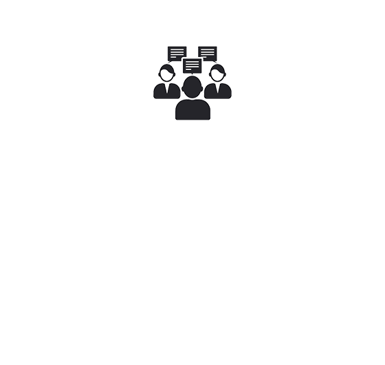

Introducing Connexiz.com
A talent Liaison Company…
Talent Value Proposition Generation
A Talent Liaison Company, you ask?
For us, a talent vendor must not think of the
client as an entity housing their billable (Read Typical Third parties)
Connexiz takes pride in positioning itself
as a pivotal partner in the clients’
strategic human capital supply chain.
We’ve weathered seismic shifts in
the economy, information technology and
hiring best practices. We’ve adapted,
progressed and surfaced, to serve you
in ways other talent suppliers
simply can’t.
A candidate is more than the sum
of their professional experiences.
We evaluate each of our candidates
to ensure they don’t only have the
know-how for the job, but the soft
skills as well.
• Exaggerated Profiles
• Skill Mismatch
• Cultural Contrast
• Communication Gaps
• Integrity Lapse
Solution
We align your needs with our talent by creating strategic talent pools. In this mode of proactive rather than reactive recruiting, we are able to apply one of a combination of manual technical and cultural fit screening, online proficiency test, background verification and our proprietary profile match and resume authenticity algorithms to deliver right candidate at the right time at the right price.
Solution
• Scheduling
• Interviewee Unpreparedness ( Technical and Social )
• Bait and switch.
Liaison means coordinator. Connexiz starting from the resume submission, takes upon itself the coordination of all the intermediate step from there on to the start date. We will also coach candidates in general interview technique as well as client/ JD Specific intricacies. We boast of an interview to hire ratio of nearly 50%. Bait and switch is an ill practice increasingly getting associated with “third parties”. One obvious reason for such companies resorting to such practices is the fact that these companies are in for a quick buck rather than building a long lasting
Solution
• No show
• Earlier Withdrawal
• Non reasonable vacation request
Liaison means coordinator. Connexiz starting from the resume submission, takes upon itself the coordination of all the intermediate step from there on to the start date. We will also coach candidates in general interview technique as well as client/ JD Specific intricacies. We boast of an interview to hire ratio of nearly 50%. Bait and switch is an ill practice increasingly getting associated with “third parties”. One obvious reason for such companies resorting to such practices is the fact that these companies are in for a quick buck rather than building a long lasting
Solution
• Disgruntled third party Consultants
• Our proactive recruiting system has the built in capability of creating a professional yet friendly relationship with our talent. Our excellent staff retention rate of 100% speaks of this fact.
• We also have a formal process to consistently communicate with our professionals throughout their engagements.
• Excellent compensation packages
Solution
• Consultant immigration status – Lack of transparency
• I-9 Violations
Always staying on the right side of the law is our priority. With a mix of processes and technology, we keep close track of immigration matters and keep our clients abreast of the same as and when needed. We also have a retained the services of an expert immigration attorney who continuously guides us in all immigration processes.
The testament to our exceptional well handling of immigration is the number of requests that we consistently receive from our clients, who need to house any visa bound candidates that are in search of a new employer.
No Corp to Corp
No Problem
You can still tap into our Talent Pool
How?
Margin Share Program
How it will work
We let our non-visa bound consultant work on your W2
How will the numbers work?
Option 1
o 75% of the allowed payout rate is paid to the consultant.
o 25% of that is paid to us on 1099.
o After project candidate returns to Connexiz.
Option 2
o Our candidate goes on your W2.
o Total Bill Rate MINUS Candidate Pay Rate and MINUS Payroll Tax = Profit Margin.
o Split Profit Margin 50/50 ( You/Us).
o After project candidate returns to Connexiz.
Need further customization, let’s talk.
Connexiz Singularity

o Socially responsible alternate to the typical third part suppliers
o Ours is a service satisfying client’s needs while also providing the consultants with opportunities that challenge them to enhance their skills and further their careers.
o Ability to connect you with the non-traditional talent sources.
o Affordable care Act Compliant.
o Best in class liability insurances both in quality and amounts.
o Excellent Immigration Management record – 0 H1B’s denial in over a decade.
The proof is in the pudding. Let’s work together.